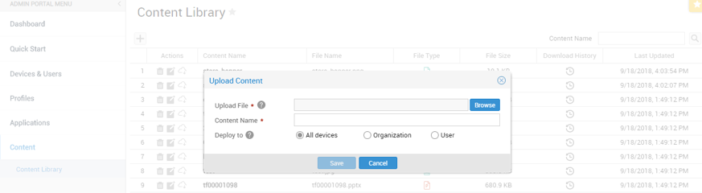
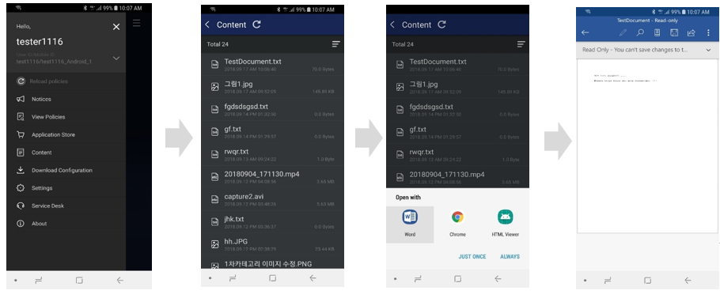
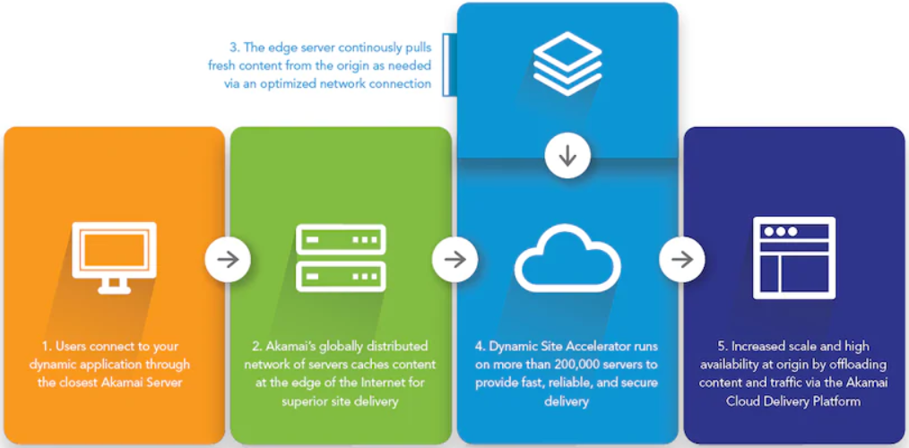
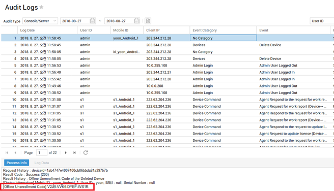
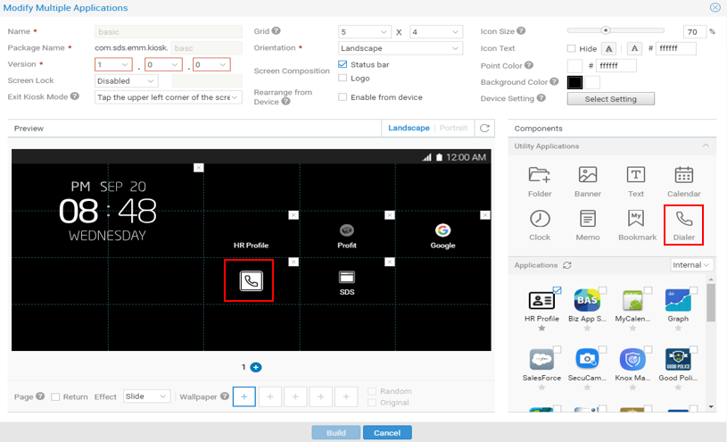
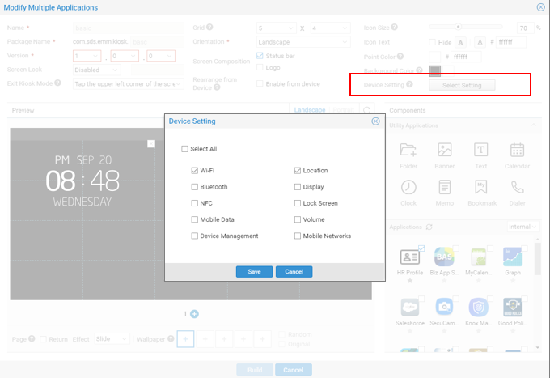
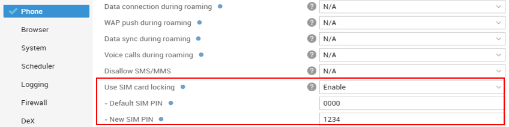
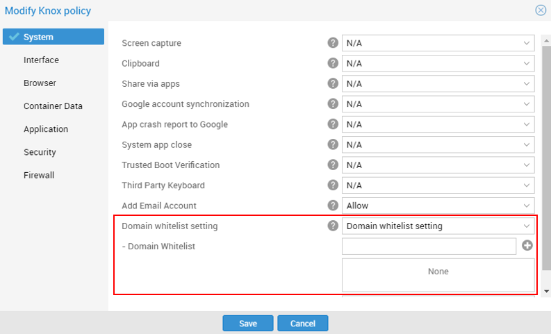

Knox Manage 2.1.4 release notes
Last updated July 26th, 2023
Please refer to the below list of new features and improvements to be released with Knox Manage version 2.1.4 scheduled for Sunday, September 30, 2018.
Mobile content management (MCM) support
This is a significant enhancement that many customers waited for. From this release, IT admins can remotely upload and distribute files to selective targets per Organization/User/Devices, or to all levels.

The size of each content should be less than 100 MB. Console-wise, KM does not limit the total uploading capacity. Most of the major productivity, image, video file types are supported:
- Productivity — DOC, DOCX, PPT, PPTX, XLS, XLSX, GUL, HWP, PDF, RTF, WKS, WPD, TXT
- Image — BMP, GIF, JPEG, JPG, PNG, PSD, TIF, TIFF, ICO
- Video — 3GP, AVI, MKV, MP4, MOV, MPG, MPEG, RM, SWF, WMV, WAV, MP3
Once deployed, end users can access files in the Content which is the menu in the KM agent. Native application for each content should be run for user to view the files.
Click Content > Browse contents list > Select a proper viewer app > Read the content.

As of infrastructure for MCM feature, Knox Manage will utilize CDN (Contents Delivery Network) service of Akamai. The below diagram illustrates how it works.

Find the offline unenrollment code of deleted devices
To date, offline unenrollment code is available so long as the device is available in the Knox Manage console. IT admins had to make sure to jot down the code before deleting; if deleted accidentally, it was impossible to find the code.
From this release, IT admins can find Offline unenrollment code in Audit Logs even if the device has been deleted from the Knox Manage console.

Dialer app support in multi-kiosk mode
Dialer app has been added under the Utility Applications list in Kiosk Wizard components. IT admins can drag and drop Dialer app to the kiosk screen, and click the phone dialer icon to default set to automatically run the app.

Configuration of kiosk settings
To date, IT admins could either allow or disallow the entire access to the Device Settings of kiosk devices. Now, IT admins can configure which options from Device Settings to be available in kiosk devices.

New Knox Manage console menu UX
The Knox Manage console menu has been updated for better user experience.
| Page | Level 1 | Level 2 |
|---|---|---|
| Dashboard | ||
| Quick Start | ||
| Devices & Users | Devices | |
| Users & Organization | ||
| Groups | ||
| Profiles | Device Management Profile | |
| Application Management Profile | ||
| E-FOTA Management | ||
| Applications | Internal Applications | |
| Public Applications | ||
| Kiosk Applications | ||
| Control Applications | ||
| VPP Applications | ||
| Categories | ||
| Content | Content Library | |
| Service Overview | Notices | |
| Alerts | ||
| Device Command in Queue | ||
| Log and Event | Device Logs | |
| Audit Logs | ||
| Audit Events | ||
| History | Device Command History | |
| Group Command History | ||
| Send Message History | ||
| Settings | Configuration | |
| Android | Limited Enrollment | |
| iOS | APNs Setting | |
| DEP Server Settings | ||
| DEP Device Management | ||
| VPP Server Setting | ||
| VPP User Management | ||
| License | ||
| Message Template | ||
| Reference Data | ||
| Knox Manage console | Logo Setting | |
| Administrators | ||
| Dashboard Management | ||
| Reports | ||
| Advanced | Certificates | External Certificates |
| Certificates Issuing history | ||
| Certificate Authority (CA) | ||
| Certificate Templates | ||
| AD/LDAP Sync | Sync Services | |
| Sync History | ||
| Sync Exceptions | ||
| System Integration | Directory Integration | |
| Directory Connector | ||
| EMM API | API Client | |
| API Log | ||
| API Client Log |
SIM lock option
SIM lock option is available in the Profiles menu. If SIM lock option is enabled, IT admins should set the default SIM PIN and the new PIN.
- Default SIM PIN — IT admin should firstly check if SIM cards have default PIN set by operator. In that case, the already existing SIM PIN must be written.
- New SIM PIN — Write a 4- to 8-digit number as to unlock SIM card. This field can be used to change a PIN number as well. If device is SIM-locked, user must enter this PIN number to reuse the SIM card.
When the device is unenrolled from KM, the SIM PIN number reverts back to its original one.

Prohibit email registration within the Knox Workspace
IT admin can prohibit end users from adding email accounts to the preloaded or Samsung email apps.
If set to Disallow, then any email accounts cannot be registered.
If set to Allow while domain allowlist is selected at the same time, only accounts of the allowed domain can be added.

Open APIs for Samsung Electronics B2B Shop
The below two open APIs are available for Samsung Electronics B2B shop.
-
Tenant creation — The tenant is created and password is updated in initial login-in.
Endpoint — {KM_URL}/crs/oapi/tenant/createTenant
-
Add License — The license is registered to each matched tenant
Endpoint — {KM_URL}/crs/oapi/license/registerLicense
Terminology changes
Limited Enrollment (IMEI Management > Limited Enrollment)
The IMEI management option has been renamed as Limited Enrollment. KM can now allow only the predefined devices be enrolled. IT admins can add devices by IMEI or Serial numbers, or in bulk using excel file.
Device Status (Activated/Deactivated > Enrolled/Unenrolled)
Device status “Activated/Deactivated” has been updated to “Enrolled/ Unenrolled” for clear messaging. The enrolled device icon and the text description is added in user/organization, administrators menu, etc.
Miscellaneous enhancements
- The cloud connector always applies when IT admin integrates AD/LDAP or registers CA. Customer does not have to choose whether to use or not.
- Privacy Policy & Terms of Use is shown in the Knox Manage console.
- Position & enroll method cannot be viewed from the User & Organization list.
- License buffer 10% is applied although customers cannot see any difference in the Knox Manage console. They can use 10% more license, if the number of licenses exceeds the limit.
- DLP (Data Loss Prevention) for Knox is eliminated from KM v2.1.4
Resolved issues and improvements
- [00149928, 00151664/ KMVOC-7135, 7258] Multiple apps kiosk apps icon missing
- [00150977,00151266,00151322 / KMVOC-7196,7198,7199] Knox Manage Command issue / Failure with retrieving all devices pins to the Devices location dashboard / Failure with Reports generation
- [00150838, KMVOC-7203] Knox container is not deleted even though KM agent is logged out
- [00150318. KMVOC-7204] Knox Manage Knox Manage console login issue
- [00151423, 00151970 / KMVOC-7238,7239] Knox Manage Remote Support
- [KMVOC-7276] Device filtering by OS version
Is this page helpful?